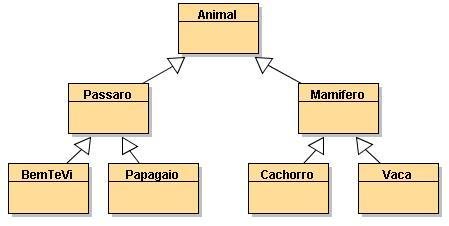

Herança
É o mecanismo pelo qual uma classe (sub-classe) pode estender outra classe (super-classe), aproveitando seus comportamentos (métodos) e características possı́veis (atributos)
Herança
- Permite que elementos mais especı́ficos incorporem a estrutura e o comportamento de elementos mais genéricos
- Frequentemente um objeto de uma determinada classe também é um objeto de outra classe.
- Reutilização de atributos e métodos de uma classe por outra classe
Herança
- Classes que herdam atributos/métodos possuem apenas os atributos ou métodos que apenas ela deve possuir (atributos especı́ficos)
- Exemplo: estudante e funcionário
- Ambos possuem atributos como nome, idade e CPF
- Mas e quanto aos atributos curso e salário?
Herança
- Se uma classe A herda atributos e métodos da classe B, dizemos que:
- A é subclasse (ou classe-filha) de B
- B é superclasse (ou classe-mãe) de A
- Assim a classe existente é chamada de superclasse e a nova classe de subclasse.
Herança
Vantagens
- Diminui a quantidade de código através da reutilização de elementos
- Traz maior integridade e facilidade de manutenção
- Permite que alterações no código de uma classe mãe sejam compartilhadas com todos os seus herdeiros, sem a necessidade de reprogramação
Hierarquia de Classes

Hierarquia de Classes
- Toda subclasse pode vir a tornar-se uma superclasse para futuras subclasses
- A superclasse direta é aquela a partir do qual a subclasse herda explicitamente, uma superclasse indireta é qualquer superclasse acima da classe direta na hierarquia de classes
extends
- A palavra reservada extends indica que a classe a ser especificada herda de uma outra classe
- Uma sub-classe tem acesso aos atributos e métodos definidos com visibilidade public e protected, mas não private.
//Passaro.java
public class Passaro extends Animal{
...
}
//Papagaio.java
public class Papagaio extends Passaro{
...
}
//Cachorro.java
public class Cachorro extends Mamifero{
...
}
super()
- A palavra reservada super é utilizada para chamar um método construtor da superclasse
- A invocação de um método construtor da superclasse deve ser a primeira linha do método construtor da subclasse
public class Animal{
public Animal(){
}
}
//Passaro.java
public class Passaro extends Animal{
public Passaro(){
super();
}
}
public class Animal{
protected String nome;
public Animal(String n){
nome = n;
}
}
//Passaro.java
public class Passaro extends Animal{
public Passaro(String r){
super(r);
}
}
public class Animal{
protected String nome;
public Animal(String n){
nome = n;
}
}
//Passaro.java
public class Passaro extends Animal{
public Passaro(String r){
super("Um nome qualquer");
}
}
Exercícios
Um ou mais métodos construtores!
Atributos encapsulados!
Classe de teste!
Exercício 1
- Classe Empregado
- Nome, CPF, RG, Nº carteira de trabalho, salário (hora), horas trabalhadas no mês
- Método calcularSalario: calcula o salário mensal baseado no número de dias que o empregado trabalhou
- Classe Operario
- Subclasse de empregado + atributo comissao
- Escrever método que calcule o salário do operário (calcularSalario + comissão)
Exercício 2
- Classe ContaPoupança
- Subclasse de conta
- Método calculaRendimento (recebe a taxa de rendimento e adiciona ao saldo)
- Classe ContaEspecial
- Subclasse de conta
- Valor de limite
- Deve ser possível sacar até o valor do limite
Exercício 3 (Entregar)
- FiguraGeometrica
- Atributos: cor, estaPreenchida (boolean)
- Circulo (subclasse de FiguraGeometrica)
- raio
- calcArea, calcDiametro, calcCircunferencia
- Retângulo (subclasse de FiguraGeometrica)
- base, altura
- calcArea, calcPerimetro
- Escreva uma classe de teste
Agradecimentos
- Professor Raphael de Souza Rosa Gomes (UFMT)
- Professora Karen Figueiredo (UFMT)